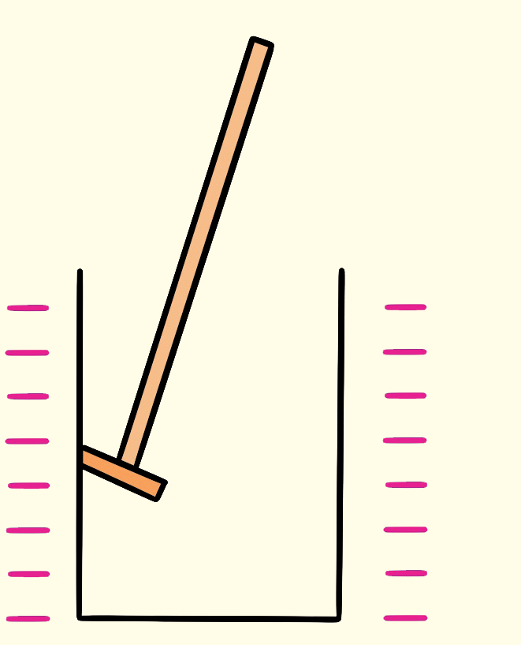
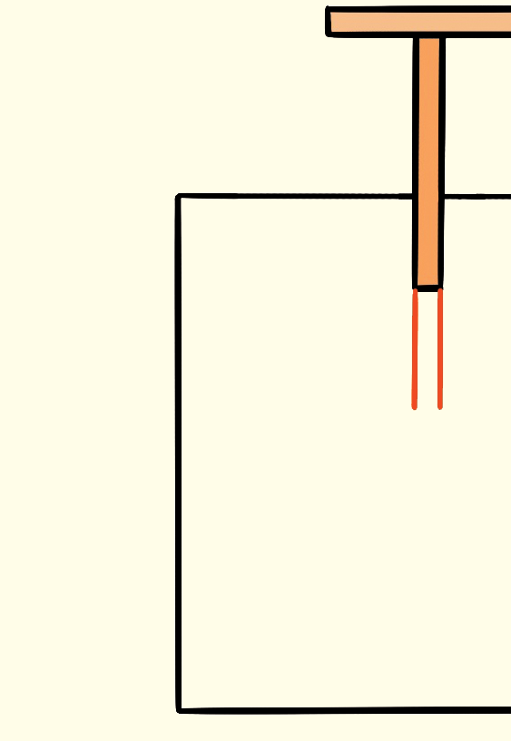

Activity 1.12


Proof planeHollow charged conductor
Gold leaf electroscopeProcedure
Questions
(a) What can you say about the deflection of the leaf in step 3 and 5?
(b) Write a summary of your observations.
Questions
(a) What can you say about the deflection of the leaf in steps 3 and 5?
(b) Write a summary of your observation.
In a solid conductor, the electrons move apart when charges are gathered from various points on the conductor.
The extent of this divergence is influenced by the quantity of charges collected at each location.
As demonstrated in Activity 1.11, the leaf shows greater divergence when charges are drawn from a sharp point compared to the flat end of the object.
Conversely, in a hollow conductor, charges collected from the exterior cause the leaf to diverge, while those collected from the interior show no divergence.
This suggests that in any conductor, charges primarily exist on the outside rather than within the material.